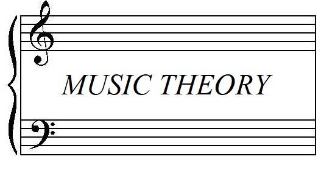

Starting A New Path
I am a computer programmer in training, located in Tampa, Florida. Through my newly developed programming skills, I hope to relocate to California to begin a new and exciting chapter. My background in Classical music will help me to bring a creative approach to my new tech career.
About Jeffrey
Before COVID hit America, I began 2020 with a multi-city concert tour, performing solo Classical piano recitals of music by Bach, Beethoven, Chopin, Schubert, Liszt, and Medtner. I had just signed an exciting contract with a major cruiseline, and was poised to move to LA and enter the prime of my artistic career. Regrettably, the economic impact of the global pandemic had a disastrous effect on the arts, so I made the decision to expand my skillset into computer programming to help find stability and get through these trying times.
Though I may be new to coding, I am excited and optimistic about this new venture. In nearly 30 years of music experience, I have developed valuable skills as a performer, collaborator, creator, researcher, and educator. Some of the skills which I believe will aid me as a programmer include:
- Focus and self-discipline
- Goal- and detail-oriented work ethic
- Creativity and lateral thinking for out-of-the-box problem solving
- Practice in breaking down complicated problems to visualize and find logical and pragmatic solutions
- Being able to learn quickly and efficiently
- Ability to collaborate with others as leader, partner, and supporter
- Confidence presenting/performing in front of large groups
- Ability to communicate complex ideas clearly and succinctly
- The patience and diligence which comes from teaching young children
I am excited and hopeful to provide work in web development and many other facets of computer programming. As I continue to learn, I will use my creativity to explore ways to combine the arts and tech to create, innovate, and educate.
Projects
You may be interested to check out my recent projects. As a lifelong artist and teacher, I'm eager to synthesize my new programming skills. Here you'll find the beginnings of an educational site for my music students. This was my first big attempt to combine HTML, JavaScript, and CSS. It's still very much a work in progress, but I'm excited for the possibilities of what it can become!
Title: Jeffrey Chodil Music Education Page
Description: Here is the beginning of an educational resource for my music students. My goal is to create an interactive site to present music concepts and help students practice those concepts.
GitHub repo: Jeffrey Chodil Music Education Page
App: Scale Building App
